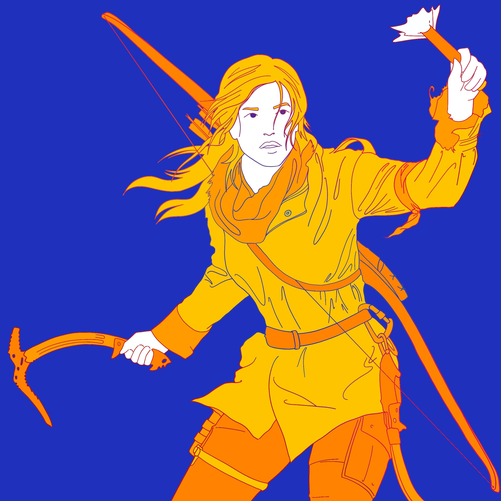
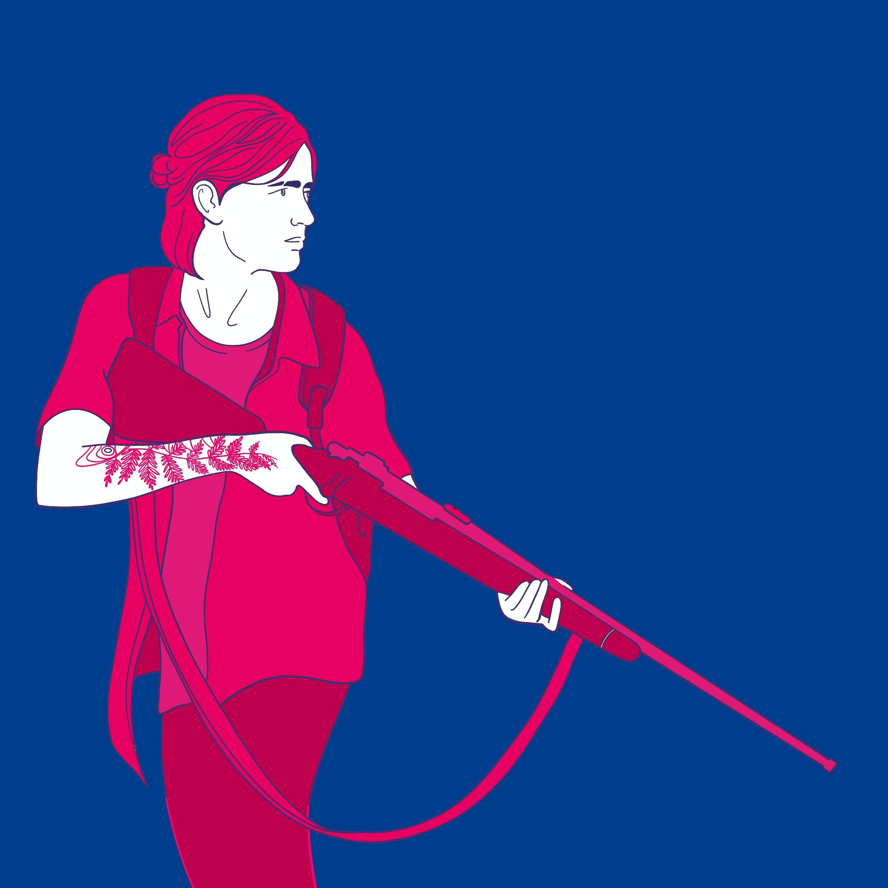

Featured
Illustrations of some of the inspiring women in gaming culture

Badassery at its best!!
List of games
- Tomb Raider Trilogy
- Life is Strange Universe
- Alien: Isolation
Lara Croft
Lara Croft is a fictional character and the main protagonist of the video game franchise Tomb Raider. She is presented as a highly intelligent & athletic English archaeologist who ventures into ancient tombs and hazardous ruins around the world.
Ellie
Ellie is a fictional character in the 2013 video game The Last of Us, and the main protagonist of the upcoming video game The Last of Us Part II.
